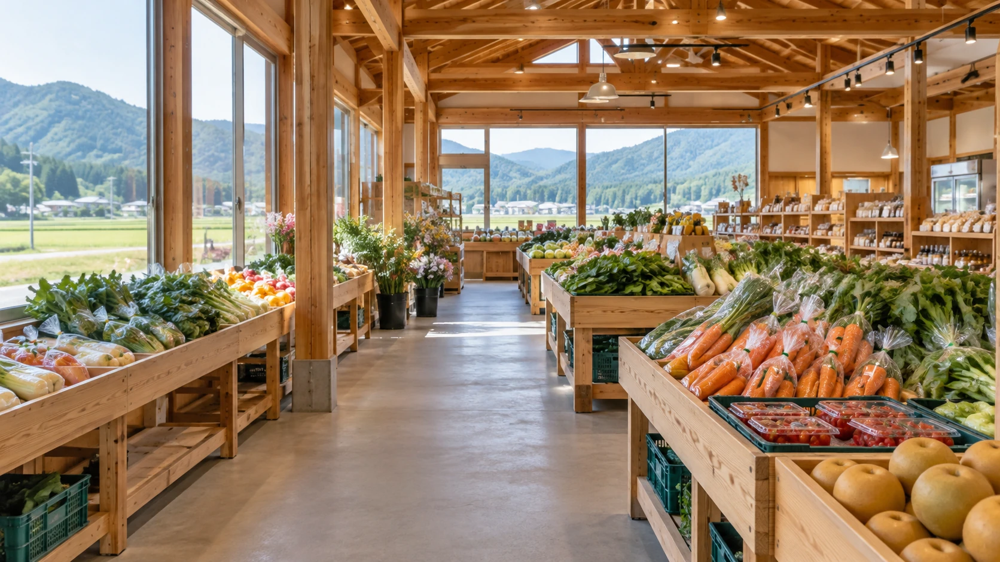
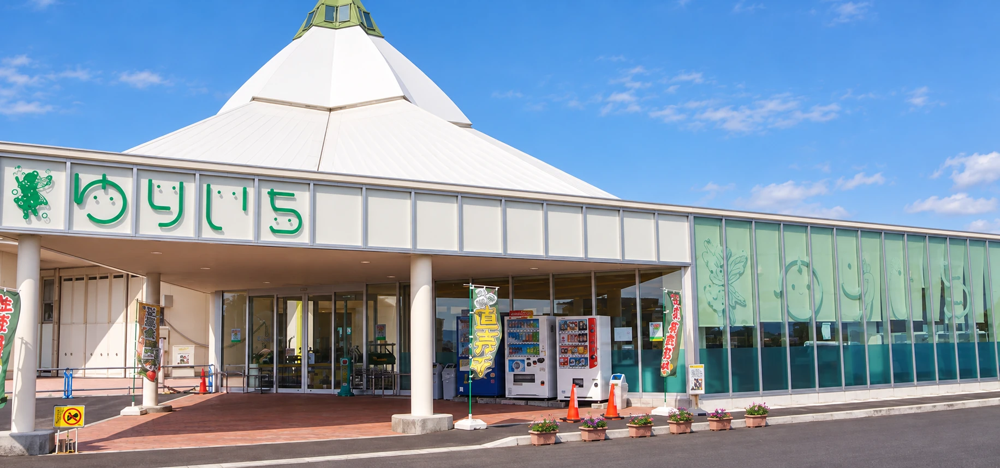
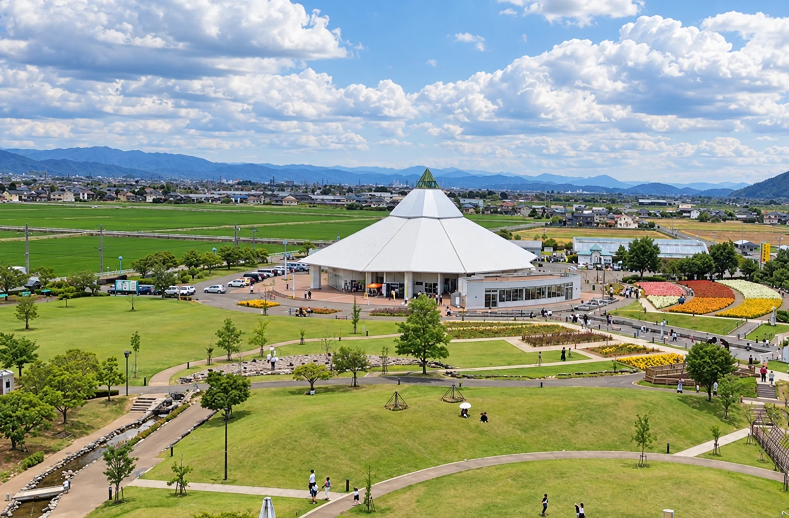
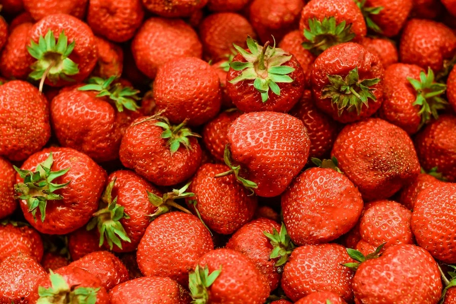

地元の旬と、おいしい出会いを。ゆりいちで。
本日の入荷→
NEWS
一覧を見る →お知らせ
EVENT
イベント




ゆりの里公園
農産物直売所
ゆりいちについて
福井・坂井の新鮮な食材や
農産物、特産品が集まる直売所。
毎日のお買い物から
公園へのお出かけまで、
地域の旬をお楽しみください。
ゆりいちについて→施設案内・アクセス→農産物、特産品が集まる直売所。
毎日のお買い物から
公園へのお出かけまで、
地域の旬をお楽しみください。

買う
Shopping地元の農家さんから届く野菜や果物、お米。
本日の入荷と価格を、来店前に確認できます。

食べる
Gourmetお買い物のあとに、カフェでひと休み。
旬の味わいと一緒に、ゆっくりとした時間を。
CALENDAR
営業カレンダー
休：定休日催：イベント
日付を選んで確認
2026年10月15日
ゆりいち 9:00–17:00
ACCESS
交通アクセス
〒919-0483 福井県坂井市春江町石塚21-2-3
農産物直売所ゆりいち（ゆりの里公園内）
公園の無料駐車場をご利用ください。